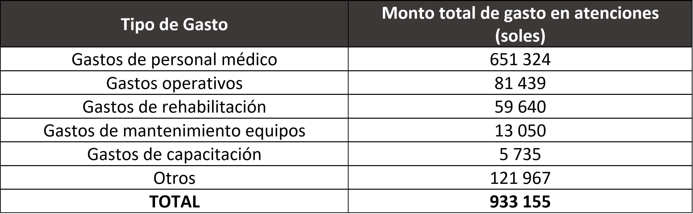
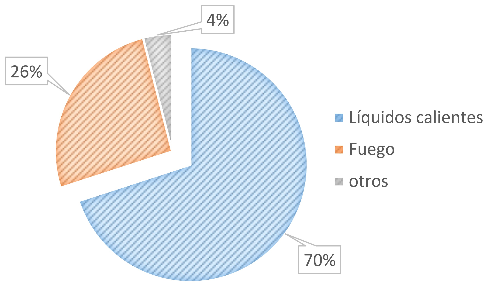

Prevalencia de Anemia en Mujeres en Edad Fértil (15 a 49 años de edad).
En la información recopilada durante la encuesta demográfica y de salud familiar en el 2017 podemos apreciar como los porcentajes más altos de mujeres afectadas se encuentra en aquellas en condición de embarazo (29.6%) y en aquellas que utilizan el DIU como método anticonceptivo (39.5%). Podemos incluir que el grado de anemia leve en mujeres gestantes es de 21.4%, y de anemia moderada es de 8.1% y el porcentaje de anemia severa de 0%. Añadir que el número de mujeres es de aproximadamente 1267. Añadir que las mujeres en periodo de lactancia también presentan un porcentaje resaltable de 23.3%, con 21.4% de anemia leve, 1.8% moderada y 0.1% severa, siendo en promedio unas 32216 mujeres (Ver Tabla N°3). Esto nos lleva a concluir que una gran cantidad de madres padecen de anemia [18], lo cual podría representar un incremento de riesgos durante el embarazo y el nacimiento futuro de un niño con anemia.

Podemos ver en el Grafico N°2 la prevalencia de anemia en mujeres de 15 a 49 años de edad en el periodo 2013 – 1017. Al igual que en niños menores de 5 años la prevalencia en mujeres en edad fértil parece mantenerse constante en torno al 21%. Pero con un menor porcentaje de casos de anemia moderada (casi un sexto del total). Aunque los valores son relativamente menores que en los casos de niños, siguen siendo considerables en una vista global. Además, como veremos en el análisis de efectos, las mujeres con anemia al quedar embarazadas pueden tener complicaciones en el embarazo; además de las complicaciones que le pueden pasar a sus hijos al nacer.
